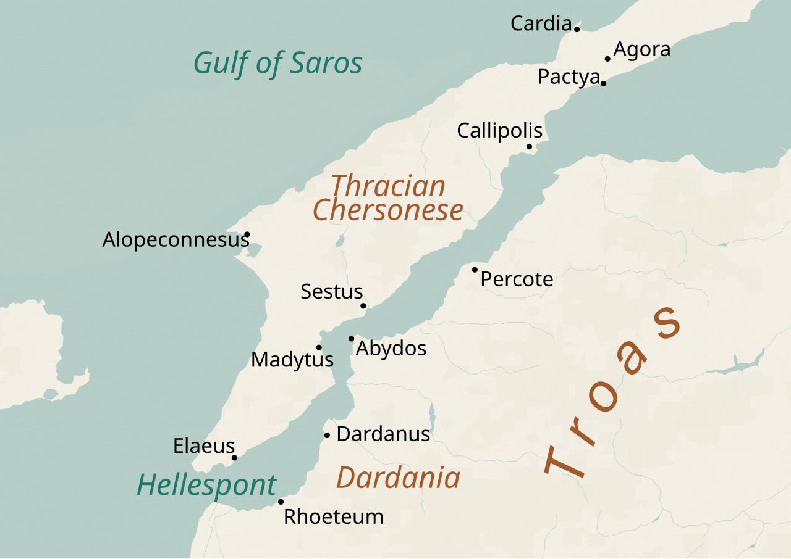
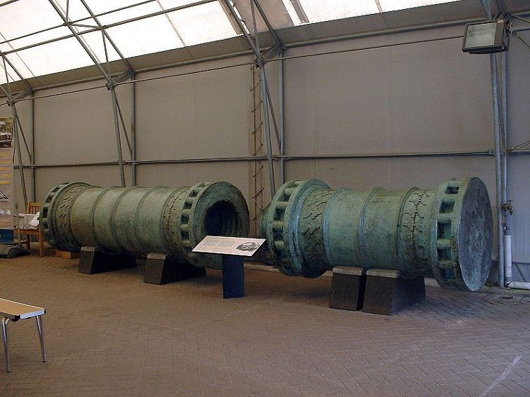
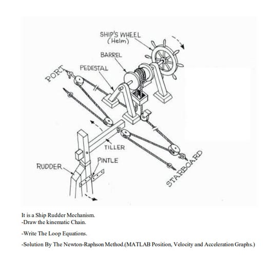
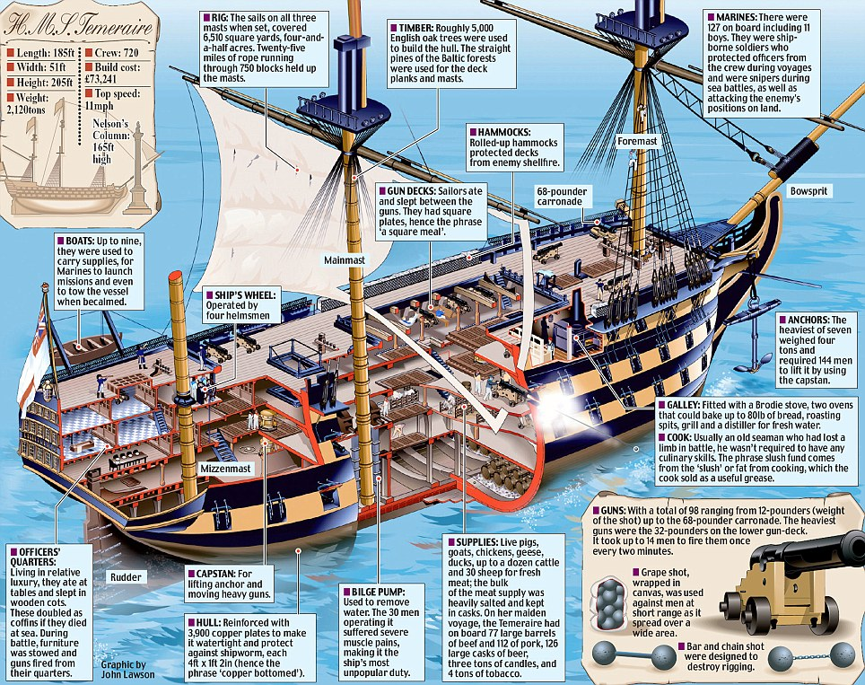
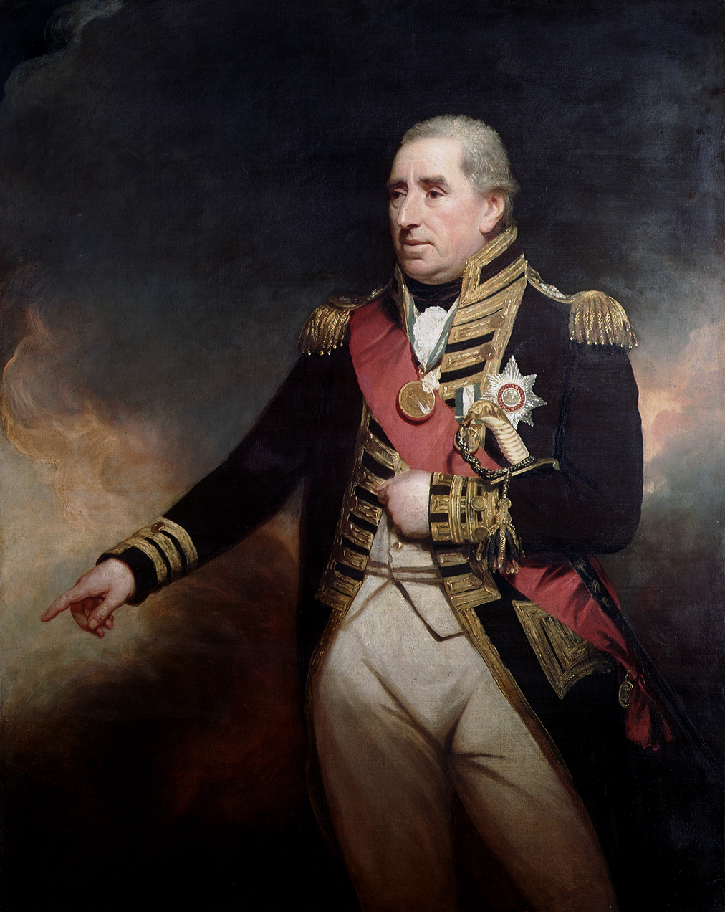
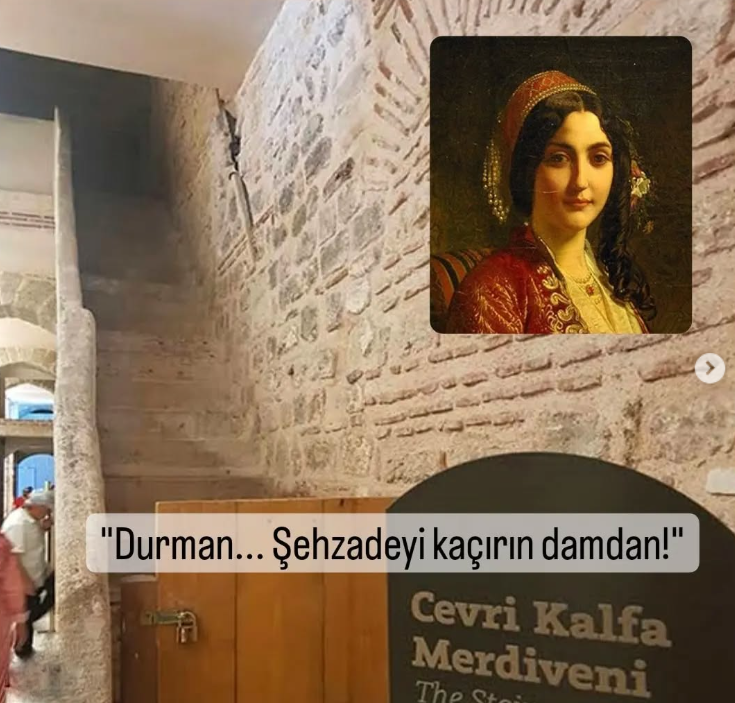
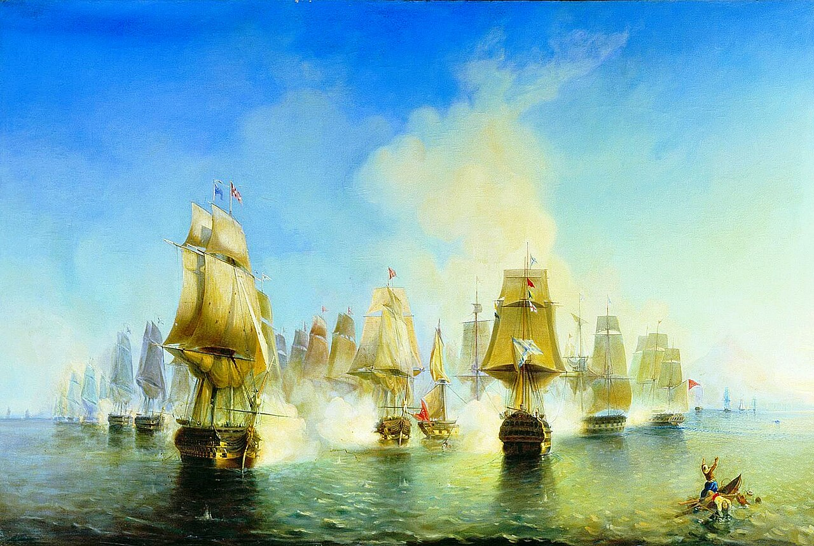

이스탄불 여행 (11) - 해협이 막히면 술탄이 죽는다
게시: 2026-01-22T06:30:13+09:00
이스탄불을 굴복시킬 뾰족한 방법을 찾지 못한 덕워쓰 제독의 함대는 철수를 결정했고, 이스탄불 앞바다에 도착한지 9일만인 1807냔 3월 1일 뱃머리를 돌려 다다넬즈 해협쪽으로 향합니다. 영국 함대는 이틀 뒤인 3월 3일, 다다넬즈 해협에 도착하여 그 좁은 수로를 통과하기 시작했습니다. 그리고 당연히, 그들을 기다리던 낯익은 손님들이 있었습니다. 2월 19일에도 영국 함대와 뜨겁게 대포알을 주고 받았던 해협 양쪽 해안의 오스만 투르크 요새들과 포대들이었습니다. 2월 19일에 대포알을 주고 받을 때도 영국 함대가 입은 손실은 5명 사망에 51명 부상으로서 무시할 정도까지는 아니었지만 상대적으로 가벼웠습니다. 그때만 하더라도, 오스만 투르크의 포대들은 영국 함대를 맞이할 준비가 제대로 되지 않아 화력을 제대로 발휘하지 못했기 때문이었습니다. 그러나 영국 함대가 다시 다다넬즈로 내려올 것을 잘 알고 있던 이번에는 달랐습니다. 특히 아시아쪽 아비도스(Abydos)와 그 건너편 유럽쪽의 세스토스(Sestos)의 요새들에서 퍼붓는 포화는 상당히 강력하여, 영국 함대는 꽤 큰 피해를 입었습니다. 덕워쓰 제독의 기함인 HMS Royal George도 포탄을 얻어 맞았고, HMS Windsor Castle은 무려 300kg짜리 화강암 포탄을 얻어맞고 주돛대(main mast)가 부러지는 봉변을 당했습니다. HMS Canopus는 조타수들과 함께 조타륜이 포탄을 얻어맞고 날아가 버렸습니다. 그나마 아무 함선도 침몰하지 않는 것이 다행이었습니다. 다다넬즈 해협을 빠져나온 뒤 집계해보니, 영국 함대는 다다넬즈-보스포러스 해협에서 보낸 2주 동안 총 42명의 전사자와 235명의 부상자, 그리고 4명의 실종자라는 꽤 큰 인명 피해를 냈습니다. 영국 함대에게는 특히나 약이 오르게도 오스만 투르크군의 인명 피해는 거의 없었습니다. 영국 함대도 해변의 요새들에게 열심히 대포를 쏘아댔지만 돌로 된 성벽 뒤에 숨은 포대에게 별다른 피해를 줄 수는 없었기 때문이었습니다.

(다다넬즈 해협의 아비도스와 세스토스의 위치입니다.)

(다다넬즈 해협에서 영국 함대를 기다리고 있던 요새들의 대포는 여러가지가 있었는데, 그 중에는 이런 거포들도 있었습니다. 덕워쓰 제독의 함대를 향해 화강암 또는 대리석을 깎아 만든 거대한 석탄을 날린 이 대포는 다다넬즈의 거포라고 불렸는데, 오스만 투르크가 콘스탄티노플을 함락시킨 뒤 얼마 지나지 않은 1464년에 주조된 63cm짜리 구경의 거포입니다. 이 대포는 오스만 투르크가 해체를 고려하던 것을 1866년 빅토리아 여왕에게 선물로 주어, 이제는 포트 넬슨에 전시되어 있습니다.)

(당시 해전은 대개 근거리에서 맹렬한 포격전을 벌였으므로, 그 와중에 전열함의 조타륜이 대포알에 산산조각이 나는 경우가 종종 있었습니다. 조타륜이 날아가버리면 당장 방향 조절을 어떻게 했을까요? 조타륜은 방향타(rudder)에 연결된 밧줄을 도르래로 쉽게 당기기 위한 도구에 불과했으므로, 조타륜이 부서지면 그냥 하갑판의 수병들이 저 밧줄들을 잡아당겨 방향타를 돌렸습니다. 따라서 다다넬즈의 좁은 해협에서 조타륜이 날아가는 위기를 맞은 HMS Canopus도 방향 조정이 불가능하지는 않았습니다.)

(이 그림은 트라팔가 해전에서 프랑스 해군에게 거의 나포당할 뻔 했던 넬슨 제독의 HMS Victory를 구해낸 역전의 용사 HMS Temeraire의 세부도입니다. 후갑판쪽에 Ship's wheel이라고 표시된 조타륜이 보입니다. 저 조타륜은 도르래 외에는 아무런 동력이 없었으므로, 결국 사람 근육의 힘으로 1천톤짜리 전열함의 방향을 틀어야 하는 구조였습니다. 따라서 해적 영화에서 흔히 묘사된 것과는 달리, 전열함의 조타륜은 혼자서는 도저히 돌릴 수가 없었고 보통 4명이 달라붙어 돌렸습니다.) 결과적으로 덕워쓰 제독의 이스탄불 원정은 전열함 1척을 사고로 상실하고 여러 함선에 가볍지 않은 손상을 입은데다, 수백명의 사상자를 내는 등 상당한 피해만 입은 채 아무런 목적을 달성하지 못한 채 끝나버렸습니다. 이 실패에 대해 영국 해군성은 매우 언짢게 생각하고 덕워쓰 제독이 우유부단했다고 비난하는 여론이 많았으나, 덕워쓰는 할 말이 있었습니다. "해군 장교로서 결연히 말씀드리건대, 지상군과의 협동작전 없이 함대 단독으로 해협에 진입하는 것은 무의미한 희생에 불과합니다." 이건 맞는 말이었습니다. 몇 달 전에 수행되었던 코펜하겐 공격이 성공적으로 이루어진 것도, 영국 해군 단독 작전이 아니라 웰링턴 공작이 포함된 상당한 규모의 지상군이 상륙하여 함께 공격했기 때문에 가능했던 것이었습니다. 이 주장이 잘 통했는지, 덕워쓰 제독은 별다른 문책이나 불이익을 당하지 않고 계속 보직을 받았는데, 특히 곧 이어 이집트 알렉산드리아에 상륙했다가 역시 임무에 실패한 뒤 철수하려는 영국 지상군을 호송하는 임무를 부여받고는 이렇게 말했다고 합니다. "어느 한 쪽 작전에 집중하는 대신, 우리 내각은 한심하게도 지상군 없이 함대를 이스탄불로 보내더니, 알렉산드리아에는 함대도 없이 지상군을 보냈다."

(덕워쓰 제독입니다. 통통하신 것이 전형적인 영국 신사 같네요. 덕워쓰 제독은 이스탄불 및 이집트에서 돌아온 뒤 얼마 안 되어 새장가를 가셨고 잘 사셨습니다.) 이렇게 영국 함대가 물러간 뒤 오스만 투르크는 다시 보스포러스의 지배자로 떵떵거릴 수 있었을까요? 아니었습니다. 다다넬즈 해협 바로 바깥 쪽 테네도스(Tenedos) 섬에서, 덕워쓰의 실패를 지켜보던 함대가 있었습니다. 바로 러시아의 발트 함대였습니다. 그 함대 사령관인 세냐빈(Dmitry Senyavin) 제독은 영국 함대가 별 맥을 쓰지 못하고 물러난 것을 본 뒤, 이스탄불을 굴복시키기 위해 해협 안으로 쳐들어가는 것은 자살행위라고 결론지었습니다. 생각해보면 당연한 일이었습니다. 해군은 넓은 바다에서 적의 배를 상대할 때 기를 쓰는 법이지, 해안에서 적의 요새와 싸우는 것은 피하는 것이 상책이었습니다. 그래서 세냐빈이 택한 방법은 정말 해군스러운 전략이었습니다. 즉, 다다넬즈 해협 밖 넓은 바다에서 진을 치고, 다다넬즈 해협을 봉쇄해버린 것입니다. 다다넬즈-보스포러스 해협의 봉쇄 권한은 자신들에게 있다고 생각하던 오스만 투르크는 당황했습니다. 다다넬즈-보스포러스 해협이 막히면 당장 이스탄불의 경제에도 난리가 나기 때문이었습니다. 아니나 다를까 러시아 함대가 다다넬즈 해협 바깥쪽을 봉쇄한지 고작 두 달 만에, 이스탄불에서는 식량 부족에 항의하는 폭동이 일어났습니다. 이 폭동 와중에 셀림 3세의 개혁 정책에 불만을 가지고 있던 예니체리 군단이 쿠데타를 일으켜 셀림 3세를 페위시키고 유폐시키는 정변이 일어나기도 했습니다.

(예니체리 반란의 핵심은 자신들의 기득권을 지키려는 것이었습니다. 폐위된 셀림 3세는 일단 톱카프 궁전의 하렘에 갇혀 있었는데, 결국 다음 해인 1808년 예니체리들이 자객들을 보내 살해했습니다. 오스만 투르크의 군주들 중에 칼에 의해 살해된 것은 셀림 3세가 유일했습니다. 이 자객들은 셀림 3세 뿐만 아니라, 그의 이복 동생인 마흐무트, 즉 이후 마흐무트 2세로 즉위하게 될 젊은 왕자도 죽이려 했습니다. 이 자객들을 가로 막은 것이 체브리 칼파(Cevri Kalfa)라는 체르케스 출신의 하렘 궁녀(kalfa)였습니다. 체브리는 소란이 일자 무슨 일이 일어났는지 직감하고는 뜨거운 재를 모아 자객들 얼굴에 던지며 시간을 끌어 마흐무트가 2층으로 피한 뒤 지붕으로 탈출할 수 있도록 해주었습니다. 지금도 톱카프 궁전의 하렘에는 당시 마흐무트 2세가 탈출하는데 사용된 계단이 체브리 칼파 계단이라는 이름으로 보존되어 있습니다. 마흐무트 2세는 자신을 구해준 체브리 칼파의 공로를 인정하여 그녀를 하렘의 재무관으로 승격시켰고, 그녀는 이스탄불에 초등학교와 모스크를 건설하는 등 자선 활동을 펼쳤습니다. 저 사진 속의 튀르키예어는 "멈춰... 왕자를 지붕에서 탈출시켜!"라는 뜻입니다.)
셀림 3세를 폐위시킨다고 이스탄불에 식량이 들어오는 것은 아니었습니다. 이 상황을 어떻게든 타개해야 했던 오스만 투르크는 결국 가진 함선들을 총동원하여 다다넬즈 해협 밖으로 출격하여 러시아 함대에게 도전했습니다. 그 결과가 1807년 7월 1~2일 벌어진 아토스(Athos) 해전입니다. 오스만 투르크 함대에는 프리깃함과 슬룹(sloop)함 등 소형 함선들이 더 많았지만 전열함 수는 러시아와 오스만 투르크가 10대 10으로 동일했던 이 해전에서 오스만 투르크는 3척의 전열함과 3척의 프리깃함, 2척의 슬룹함을 잃는 참패를 당했습니다. 결국 오스만 투르크는 러시아측과 휴전 협상을 맺어 러시아의 보스포러스 해협 통행권을 인정하는 수 밖에 없었습니다.

(1807년 아토스 해전 전투도입니다. 이 그림은 1850년대에 그려진 것인데, 역시 영국 화가들이 그린 해전도에 비하면 좀 수준이... 떨어져 보입니다.) 이제 보스포러스 해협은 유럽 열강들에게 활짝 열리게 된 것일까요? 상황이 그렇게 간단하지가 않았습니다. 유럽 열강들끼리도 이해관계가 달랐기 때문이었습니다.